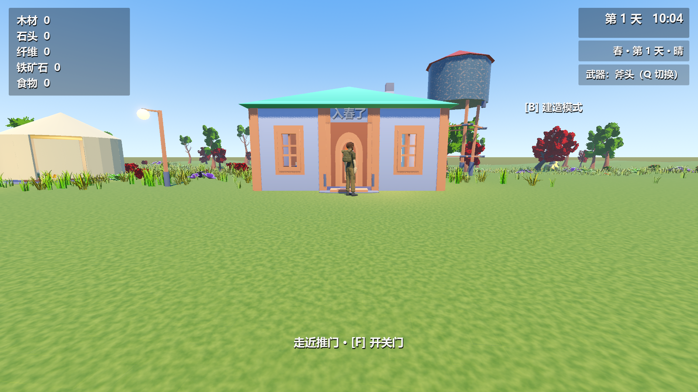
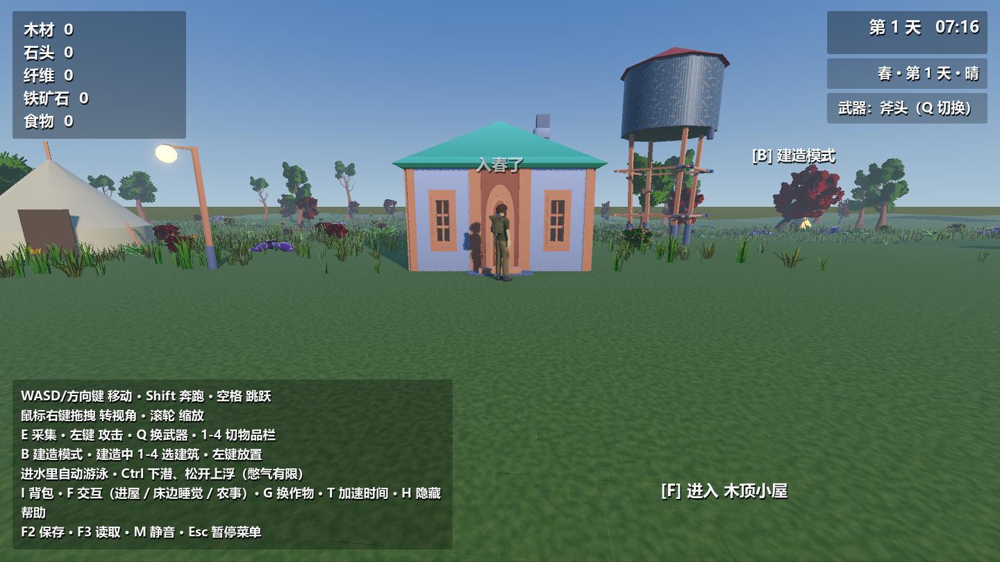
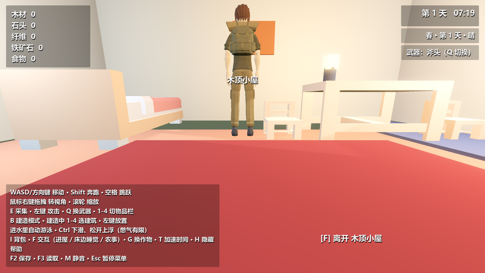
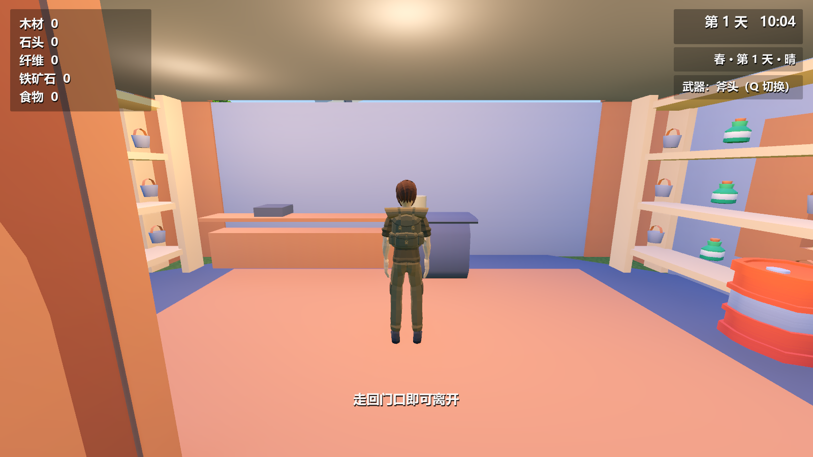
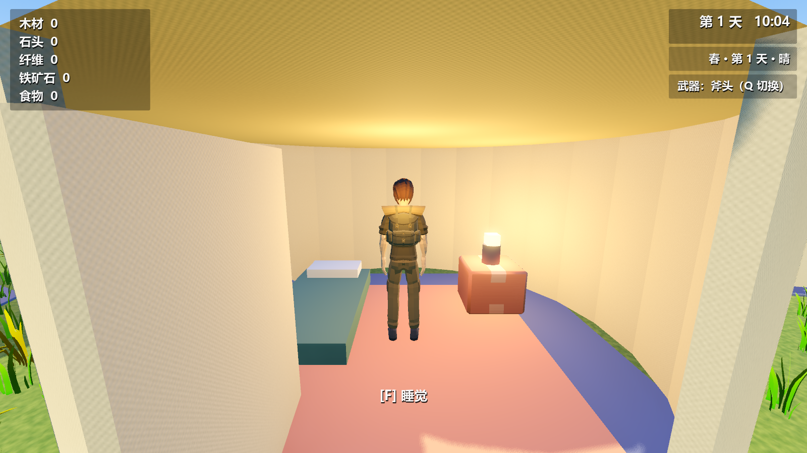

DinkumTown3D · 2026-10-13 · 当前源码功能
房门推开，直接走进去
房间与户外现在位于同一栋建筑里。玩家靠近门并向前走动时门扇打开，也可在门口用 F／触控「使用」开关门；进出不改变玩家坐标或运动速度，也不经过黑屏。帐篷门帘同样可直接通过。

门板、门框、墙与室内地板共用实际位置。点击图片可查看原图。
这些是游戏的实际渲染截图，切换图片用于查看过程关键位置，并非连续帧动画。截图脚本实际行走采样 917 次，最大水平单步位移 0.0306 米。
1 / 门口角色向门推进，门绕铰链旋转
2 / 过门槛实体碰撞支撑，自动迈过低台阶
3 / 室内镜头收近避墙，停雨并识别床边
4 / 离开走回门口，镜头平滑恢复户外距离
房屋扩大
内外规格共用一个来源；已有 CC0 房屋部件重新组合为真正的门洞、独立门板、地板与屋顶。室内保留床、桌椅、柜台、货架和灯，房间占地中的草丛已清理。
此前的进入方式

此前：户外有门，碰撞墙却封住了实际通道。
实测进入后从小镇跳到约 (900, 40, 899)，位移约 1303 米。现在房间留在实际房屋里。商店与帐篷

商店内部与门外街道直接相连，货架和柜台保留实体碰撞。
营地与玩家自建帐篷也可直接走入；睡袋功能保留。验收证据
部分自检退出时仍有 ObjectDB 清理警告，已单独记录。本次在 Windows 上验证；没有安卓真机测试，也没有把此功能重新打包进已有 Release。当前源码已更新，历史发布记录的统计保留原版本含义。
保存与读取
保存玩家在真实世界里的位置和速度，并新增稳定建筑 ID 对应的门状态。玩家在屋里保存，读取后仍可站在该房间里；缺少门状态的旧存档按关闭的门恢复，旧建筑与采集 ID 继续兼容。门口有人站在门扇扫过范围内时拒绝关闭。
查看专项断言 · 查看实际行走截图脚本 · 运行当前源码